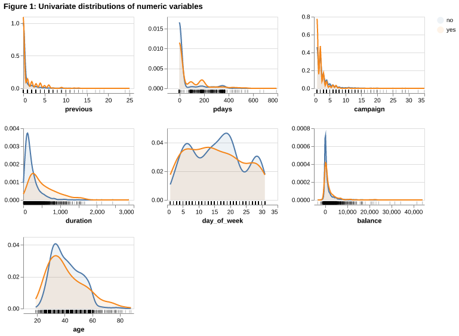
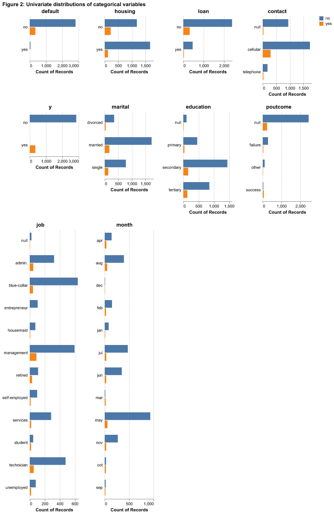
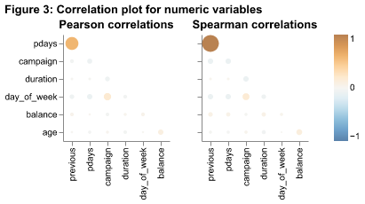
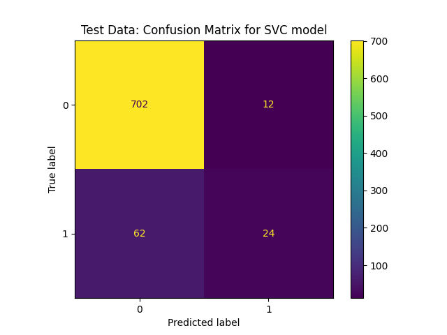

| age | job | marital | education | default | balance | housing | loan | contact | day_of_week | month | duration | campaign | pdays | previous | poutcome | y | |
|---|---|---|---|---|---|---|---|---|---|---|---|---|---|---|---|---|---|
| 30577 | 42 | technician | married | tertiary | no | 1397 | yes | no | cellular | 6 | feb | 135 | 7 | -1 | 0 | NaN | no |
| 30048 | 51 | blue-collar | married | secondary | no | 362 | yes | yes | cellular | 4 | feb | 318 | 3 | -1 | 0 | NaN | no |
| 24147 | 23 | admin. | single | secondary | no | 40 | no | no | telephone | 10 | nov | 1239 | 1 | -1 | 0 | NaN | no |
| 25584 | 57 | entrepreneur | married | tertiary | no | 1828 | yes | no | cellular | 19 | nov | 68 | 1 | -1 | 0 | NaN | no |
| 15822 | 47 | management | divorced | tertiary | no | 2105 | no | yes | cellular | 21 | jul | 363 | 1 | -1 | 0 | NaN | no |
| 177 | 34 | technician | married | secondary | no | 51 | yes | no | NaN | 5 | may | 19 | 2 | -1 | 0 | NaN | no |
| 20421 | 44 | self-employed | married | primary | no | 4 | no | no | cellular | 12 | aug | 327 | 2 | -1 | 0 | NaN | no |
| 7170 | 26 | admin. | single | tertiary | no | 3672 | yes | no | NaN | 29 | may | 360 | 5 | -1 | 0 | NaN | no |
| 928 | 52 | blue-collar | married | secondary | no | -98 | yes | no | NaN | 7 | may | 423 | 1 | -1 | 0 | NaN | no |
| 20114 | 35 | technician | single | tertiary | no | 2277 | no | yes | cellular | 11 | aug | 55 | 2 | -1 | 0 | NaN | no |
Predicting Whether Clients Will Subscribe To A Term Deposit Based On Their Information.
Summary:
We built a classification model using the Support Vector Classifier (SVC), which can utilise information related to the client and the marketing contact to predict whether a client will subscribe to a term deposit. Our folder structure and code guide were adapted from Tiffany A. Timbers, Joel Ostblom & Melissa Lee (Timbers n.d.)
Our classifier, the SVC, performed well on an unseen test data set, achieving a Test Score (Accuracy) of 0.9075. Its Train Score indicated a good fit without significant overfitting. Although the simple accuracy score does not detail the balance of True Positives versus False Negatives, an accuracy exceeding 80% suggests the model is highly effective.
Given our goal is to increase the subscription rate, the model’s primary goal is to minimize the False Negative rate, avoiding the error of predicting a client will not subscribe when they would have. The current performance suggests that using this model for initial client prioritization could significantly improve resource allocation, making the model valuable for immediate business implementation. However, further analysis of precision and recall would be necessary to optimize its practical utility.
Introduction:
Direct marketing campaigns, particularly those relying on phone calls, are a significant investment for banking institutions. The success of these campaigns is measured by the client subscription rate to a product like a term deposit. Another dataset shows that the subscription rate of term deposit in a Portuguese banking is only around 11.70% (Ngu 2024), optimizing the targeting strategy is crucial to maximize return on investment and minimize operational costs.
Here we ask if a machine learning algorithm can be used to predict whether a client will subscribe to a term deposit based on information related to the client, such as type of job, education level; and also the marketing contact, e.g. number of contacts during the campaign, number of days since last contact. Answering this question is important because term deposit campaigns often require multiple contacts to the same client, making the process labor-intensive and expensive. Thus, if a machine learning algorithm can accurately and effectively predict client subscription, this could allow the bank to prioritize clients who are most likely to convert, leading to more efficient resource allocation and a higher overall subscription rate, improving the campaign results.
Methods:
Data:
The data we used was obtained the UCI Machine Learning Repository which can be found (uci-ml-repo 2025), specifically the Bank Marketing dataset of a Portuguese bank institution . The dataset contains various features about bank customers and whether they subscribed to a term deposit, an investment product offered by the bank (variable y). Each row in the dataset contains details of customers which was used to predict if they would subscribe to the term deposit or not. The original dataset contains 45211 records with 16 features and one target (17 columns). For the purpose of this analysis, we sampled 4,000 records from the original dataset to speed up the EDA and model training process.
Analysis:
We started this analysis by performing an exploratory data analysis (EDA) to understand the nature of the variables and their relationships. We observed some missing values in the dataset. We also observed that the target variable (y) was imbalanced with a higher proportion of customers not subscribing to the term deposit.
We decided to use Support Vector Classifier (SVC) models for this analysis.The (Scikit-learn n.d.) package was greatly used in these processes. We performed hyperparameter tuning using Python RandomizedSearchCV to find the best parameters for each model. We mapped the values of the target y, using ‘yes’: 1, ‘no’: 0. The data was split using 80% for the training set and 20% for the test set. In the preprocessing, we dropped ‘day_of_week’ and ‘pdays’ because we considered them not relevant for analysis. The ‘poutcome’ variable was also dropped since it had a high number of missing values. Categorical variables were one-hot encoded, ordinal data were handled using ordinal encoding, numerical variables were scaled using StandardScaler and missing values for the selected features were imputed using SimpleImputer with the “most frequent” strategy.
The models were evaluated based on their accuracy on the test set.
Loading The Data
Table 1 shows the first ten rows of our sample data.
Data Validation
During our data valuation, we checked the following:
- Correct data file format
- Correct column names
- No empty observations
- Missingness not beyond expected threshold
- Correct data types in each column
- No duplicate observations
- No outlier or anomalous values
- Correct category levels (i.e., no string mismatches or single values)
- Target/response variable follows expected distribution
- No anomalous correlations between target/response variable and features/explanatory variables
- No anomalous correlations between features/explanatory variables
After our checks, we observed that our data had the correct data file format, correct column names, no empty observations, no missingness beyond expected threshold, correct data types in each column, and no duplicate observations.
EDA

Our distribution plots for variables previous, pday, campaign, duration, balance in Figure 1 were highly right-skewed.


This implies that most customers had low values for these variables and a few customers had high values. In addition, the correlation plots in Figure 3 showed that “previous” and “pday” had the highest positive correlation.
Data Preprocessing, Model Building and Evaluation
We experimented on SVC and Logistic Regression models. We decided to train Support Vector Classifier (SVC) to determine which was more efficient in predicting if a customer would subscribed to the banks offering of term investments. We performed hyperparameter tuning using RandomizedSearchCV to find the best parameters for each model. The models were evaluated based on their accuracy on the test set.
Results & Discussion
Our SVC train score can be seen in Table 2 below:
| metric | score | |
|---|---|---|
| 0 | accuracy | 0.9034 |
Our SVC test score can be seen in Table 3 below:
| metric | score | |
|---|---|---|
| 0 | accuracy | 0.9075 |
Our SVC classification model performed well on the testing data, with accuracy(test score) of 0.9075 and a training score of 0.9034.
Considering the imbalance in our target class, accuracy alone is not sufficient for determining the suitability of our model. Therefore, exploring metrics from the confusion matrix in Figure 4 and classification report is recommended as a next step.

| precision | recall | f1-score | support | |
|---|---|---|---|---|
| 0 | 0.92 | 0.98 | 0.95 | 714.00 |
| 1 | 0.67 | 0.28 | 0.39 | 86.00 |
| accuracy | 0.91 | 0.91 | 0.91 | 0.91 |
| macro avg | 0.79 | 0.63 | 0.67 | 800.00 |
| weighted avg | 0.89 | 0.91 | 0.89 | 800.00 |
However, relying solely on accuracy is misleading in this context. Further analysis of the classification report Table 4 reveals that the F1-scores and Recall scores, critical metrics for identifying the minority class (trem deposit subscribers) are suboptimal. The SVC model performed with a recall of 0.91 (F1: 0.89). This discrepancy between high accuracy and low recall is a classic indicator of class imbalance, where the models are biased toward predicting the majority class (non-subscribers) at the expense of identifying potential subscribers .
Model Selection:
For the purpose of this project, we will proceed with the SVC model, as it demonstrates superior predictive performance (higher F1 and Recall) compared to Logistic Regression. However, the current recall is still insufficient for a robust marketing strategy. To address this, future iterations of the model must prioritize techniques that specifically target the minority class.
To improve the model’s ability to detect subscribers and extract actionable insights, we propose the following steps:
Addressing Class Imbalance: To prevent the model from ignoring the minority class, we should incorporate class weighting (e.g., setting class_weight=‘balanced’ in sklearn) or apply resampling techniques such as SMOTE (Synthetic Minority Over-sampling Technique) to artificially balance the training data.
Threshold Tuning via Precision-Recall or ROC Curves: The default decision threshold of 0.5 is likely too high for detecting rare events. By analyzing the Precision-Recall curve, we can identify a custom operating point (e.g., lowering the threshold to 0.1 or 0.2) that maximizes Recall, ensuring we miss fewer potential subscribers even if it results in slightly more false positives.
Feature Selection with L1 Regularization: While SVC is our choice for prediction, we may utilize Lasso (L1 Regularization) as a supplementary analysis tool. L1 regularization induces sparsity by shrinking coefficients of irrelevant features to exactly zero. This would allow us to isolate the specific characteristics that drive subscriptions, providing the bank with a clear, interpretable list of features to focus their marketing efforts on.
A second area for further analysis is determining which specific features are most important for predicting whether a client will subscribe to a term deposit. Identifying these key features will enable the bank to better tailor its actions to increase subscription rates. In light of this, the Logistic Regression model is a better choice, as it provides more interpretable results. However, due to interactions between features and preprocessing steps such as regularization, the coefficients of the Logistic Regression model can become difficult to interpret. Nevertheless, if properly examined, the coefficient estimates can help identify the important characteristics the bank should focus on to increase its rate of subscriptions to term deposits.
References:
Ngu, H. E. 2024. “Predictive Analysis of Client Subscription Rates in the Portuguese Banking Sector Using SAS.” Medium. https://medium.com/@nguhe/predictive-analysis-of-client-subscription-rates-in-the-portuguese-banking-sector-using-sas-40fb04a9dcd3.
Scikit-learn. n.d. Scikit-Learn: Machine Learning in Python. https://scikit-learn.org/stable/.
Timbers, T. n.d. “Breast-Cancer-Predictor.” GitHub. https://github.com/ttimbers/breast-cancer-predictor.
uci-ml-repo. 2025. “Ucimlrepo: Python Package for Dataset Imports from the UCI Machine Learning Repository.” GitHub. https://github.com/uci-ml-repo/ucimlrepo.